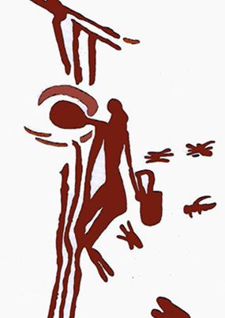

El Centro de Interpretación del Patrimonio. Ecomuseo de Bicorp, se encuentra ubicado en el centro urbano de la población (Calle San Roque, 11), en un edificio de dos plantas más sótano, recientemente musealizado con tres exposiciones (patrocinadas por la Generalitat Valenciana y la Diputación Provincial de Valencia), dos de ellas permanentes y una temporal Las dos permanentes se centran en el arte rupestre de Bicorp (sótano del edificio), con especial incidencia en las Cuevas de la Araña y Barranco Moreno; en el patrimonio etnológico del término municipal (1ª planta) y en las icnitas de dinosaurio del Tambuc (Millares) en la 2ª planta. Desde el mismo parten los grupos para visitar tanto las Cuevas de La Araña y el Barranco Moreno.